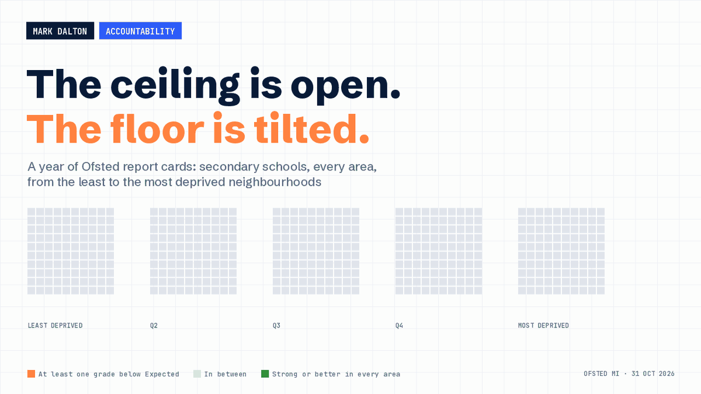
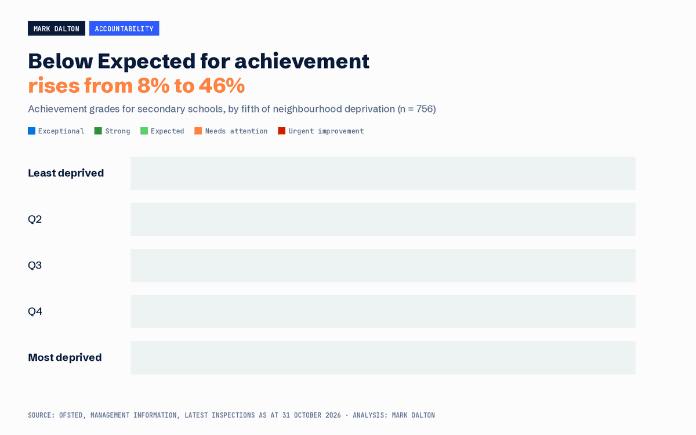
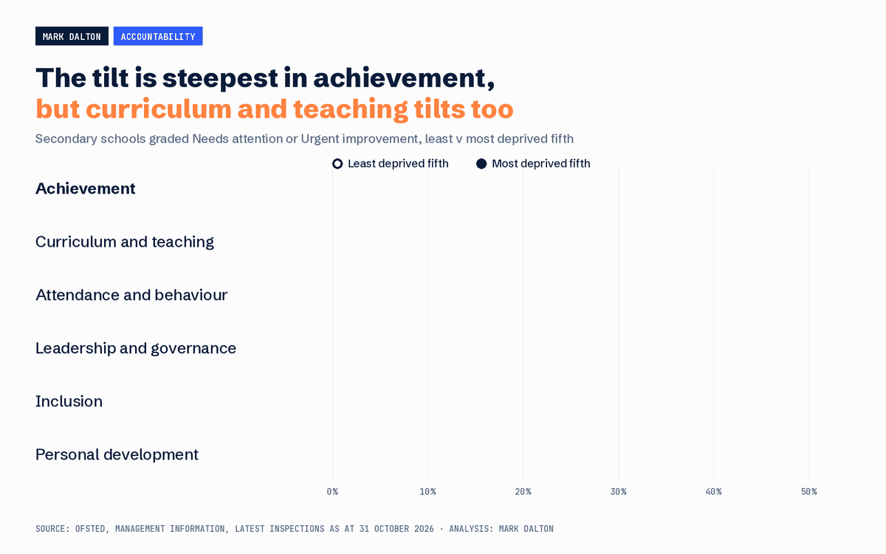
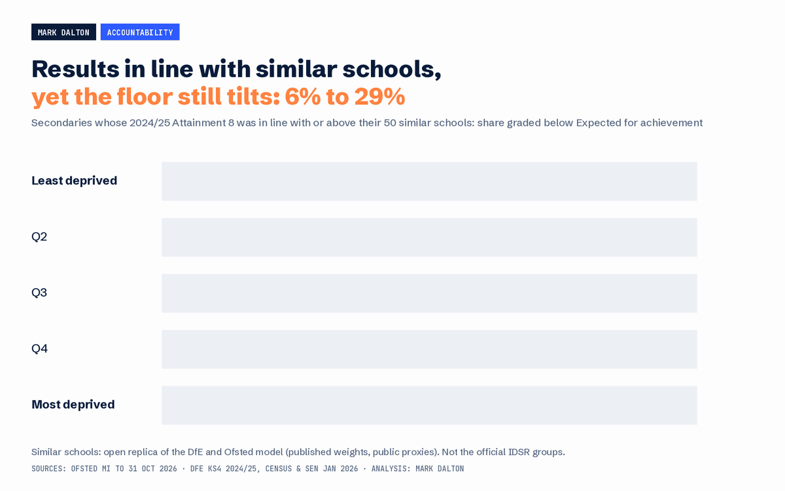
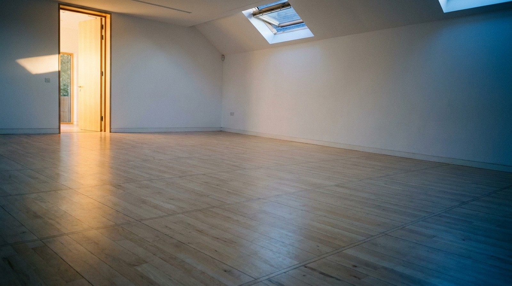
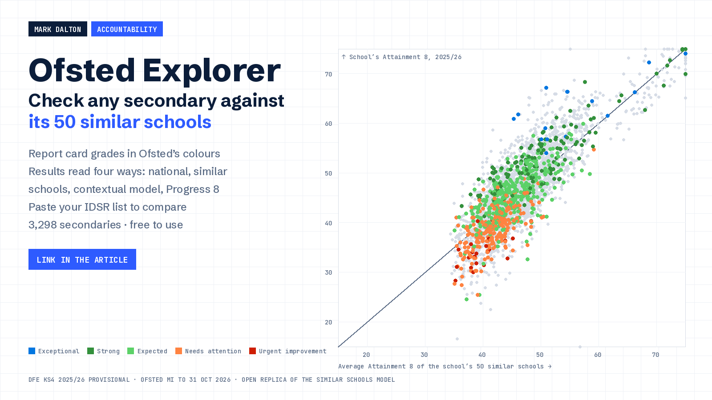

Of the 188 secondary schools whose pupils live in England's most deprived neighbourhoods and that have so far received an Ofsted report card, 87 were graded below the expected standard for achievement.11Ofsted, State-funded school inspections and outcomes: management information, latest inspections as at 31 October 2026. That is 46%. Among the 120 whose pupils live in the least deprived neighbourhoods, it was 10 schools, or 8%.
Yet those two groups were equally likely to be graded strong or better in every area: 12% each. They were also equally likely to hold at least one Exceptional grade. Deprivation tilts the floor of the new inspection system much more than it lowers the ceiling.
One year in, the stakes are rising
The renewed framework has now run for a full year. Ofsted's management information to 31 October 2026 covers 3,637 schools, about one in six state schools, inspected between November 2025 and early October 2026. I took every one of them and grouped them by how deprived their pupils' home neighbourhoods are.
Two things make the pattern urgent. Progress 8 returns with next summer's results, giving inspectors a fresh headline progress figure for the first time since 2024. Government has also consulted on making Targeted RISE support mandatory, from January 2027, for the schools with the lowest achievement, identified at first on attainment because there is no secondary progress data this year.22DfE, Key stage 4 performance measures and targeted RISE extension: government consultation, 23 February to 4 May 2026. Whatever the achievement grade is picking up is about to carry more weight.
8% to 46%, one step at a time

The rise is steady rather than driven by a few outliers. The share of secondaries below Expected for achievement climbs from 8% in the least deprived fifth to 24%, then 35%, 43% and 46% in the most deprived. Schools Week's own analysis of the first year found the same shape across all phases: 62% of the most deprived schools at Expected or above for achievement, against 85% of the least deprived.33Schools Week, What can we learn from the first year of Ofsted report cards? My figures for all phases come out at 63% and 84%.
Primary schools follow the same direction. Below Expected for achievement rises from 18% to 37%. For attendance and behaviour it rises from 5% to 26%.
Not just results: teaching grades tilt too

A gradient in achievement is the least surprising part. That grade leans on published outcomes, and outcomes track disadvantage before any school has done its work. The more striking result is curriculum and teaching. In the least deprived fifth, 9% of secondaries were graded below Expected for curriculum and teaching. In the most deprived fifth it was 31%. Attendance and behaviour rises from 11% to 28%, and leadership from 7% to 17%. Personal development barely moves, from 5% to 9%.
This data cannot tell us why, and there are two plausible explanations. The first is that the grades are accurate. NFER's 2025 labour market report found that schools serving disadvantaged communities rely more on unqualified and non-specialist teachers.44NFER, Teacher Labour Market in England Annual Report 2025. If inspectors are seeing that in classrooms, the remedy is teacher supply, and no amount of contextual adjustment would fix it. The second is a halo effect, where weak outcomes shape how teaching is read on the day. Both are probably present in some measure. Only Ofsted can test which dominates.
Having led a Q5 deprivation school, whose pupils come from the most deprived fifth of neighbourhoods in England, through a period of considerable improvement, and through inspection under the new framework, I know that it is possible to recognise a school's context without compromising expectations. We have seen the impact of a more coherent curriculum, consistently stronger teaching, investment in professional development and an uncompromising approach to literacy, but we also know that the accumulated consequences of disadvantage, poor attendance and interrupted learning cannot be reversed overnight. The challenge for inspection is to distinguish between the quality of education pupils experience today and the legacy of what they have experienced before, whilst holding schools to account for both.
Same results, different grades
The obvious objection is that deprived schools also tend to have lower prior attainment, more pupils with SEND and more pupils joining mid-year. A gradient by deprivation alone may say more about intakes than about inspection.
This term, inspectors' data packs began comparing every school with 50 statistically similar schools, matched by the DfE and Ofsted on prior attainment, disadvantage, SEND, mobility and more. Those groups are not public, so I rebuilt the model from its published technical note, with the same weights and the same distance measure, using the closest public data.55DfE and Ofsted, Similar schools model for attainment: technical note, updated 16 July 2026. The replica behaves almost exactly like Ofsted's own. Of secondaries graded Needs attention for achievement, it places 60% below their similar schools; Ofsted's published figure is 59%.66Ofsted, Considering the context of schools in challenging circumstances: an analysis of similar schools data. For Urgent improvement it is 91% against Ofsted's 90%.
Then I asked a sharper question. Take only the secondaries whose 2024/25 results, the results inspectors had in front of them, were in line with or above their similar schools. In the least deprived fifth, 5 of 79 were still graded below Expected for achievement: 6%. In the most deprived fifth, 35 of 120 were: 29%.

Matching like with like narrows the gap, from 8% against 46% to 6% against 29%. It does not close it. A school in the poorest communities whose results match its peers is still nearly five times as likely to be told its achievement falls short.
This needs reading carefully. A replica is not the official grouping, and an achievement grade rightly weighs more than one year of Attainment 8. Ofsted has said similar schools data will not be used to make grading decisions. On this evidence, it should at least frame them.
The ceiling is open: Exceptional is as common in the poorest areas

The other half of the picture deserves as much attention. At least one Exceptional grade was awarded to 7.5% of secondaries in the least deprived fifth and 7.4% in the most deprived. Strong or better in every area was 12% at both ends. Ofsted has said Exceptional practice must be sustained and have a transformational impact on disadvantaged pupils. On this evidence, schools serving the poorest communities are reaching it as often as anyone.
The most deprived fifth is therefore the most polarised. Over half of those secondaries (53%) had at least one grade below Expected, yet one in eight was strong or better throughout. Context does not cap excellence. It does make falling short far more likely.
Primary schools are less encouraging. There the ceiling narrows too: strong or better in every area falls from 12% in the least deprived fifth to 5% in the most deprived.
What this data cannot tell us
These are Ofsted's monthly management information, not official statistics, and they record each school's latest report-card inspection. Schools inspected in the first year are not a random sample, because scheduling priorities shape who comes first. The deprivation measure is Ofsted's IDACI quintile, based on where each school's pupils live; a quintile is a broad band, so schools at its edges sit beside quite different neighbours. The headline gradients do not adjust for prior attainment, SEND, school size or region. The similar-schools test does adjust for most of these, but it uses public proxies for pupil-level data, its prior attainment measure comes from the 2023/24 GCSE cohort, and it leaves out POLAR4, for which no school-level data is published. These are associations, and strong ones, but they are not proof of bias.
Look up any secondary school
I have turned all of this into a free tool, the Ofsted Explorer. Choose any secondary school in England and it sets the report card, in Ofsted's own colours, beside the school's 2025/26 results read four ways: against the national average, against its 50 similar schools in the replica, against a contextual model of what schools with that intake typically achieve, and by the last published Progress 8. If you have your IDSR, paste in the official list of 50 similar schools and it compares against those too. It also charts every report card in every phase by pupils' deprivation, so you can test the gradient for yourself.

It is built entirely from public data, and the method is set out in full inside it. If you find something that looks wrong, tell me and I will fix it.
Five changes for year two
- Publish the gradient. Ofsted should report grade distributions by deprivation band and by similar-schools group every term, so the system can see its own pattern as it develops.
- Test for a halo. A moderation study could have curriculum and teaching evidence re-read with outcomes data withheld. That would show how much of the gradient is in the classroom and how much is in the reading.
- Lead with the similar-schools comparison. The IDSR now carries it. The achievement grade should start from it, ahead of national averages, and Ofsted should publish achievement grades by similar-schools band each term.
- Model RISE before it bites. Before attainment data decides which schools receive Targeted RISE support, government should publish how many schools in each deprivation band would be identified, and how that changes once Progress 8 returns in 2027.
- Read curriculum and teaching as a workforce signal. Where that grade is lowest, the first response should be help to recruit and keep specialist teachers.
Ofsted designed report cards to see schools in context. At the top of the scale, the first year suggests they do. At the bottom, the gradient is too steep to leave unexamined.
If you lead a school in one of England's most deprived communities and have had a report card this year, does this match your experience? I would especially like to hear where context was weighed well. Reply on LinkedIn.
Sources and further reading
Cite asDalton, M. (2026). I checked every Ofsted report card. Results alone don't explain the gap. mrkdltn.com/writing/ofsted-report-cards- Ofsted, State-funded school inspections and outcomes: management information (latest inspections as at 31 October 2026)
- Schools Week, What can we learn from the first year of Ofsted report cards?
- Schools Week, Ofsted report cards: the 8 big changes you need to know
- Tes, High SEND schools five times more likely to miss Ofsted inclusion standard
- NFER, Teacher Labour Market in England Annual Report 2025
- DfE, Key stage 4 performance measures and targeted RISE extension: government consultation (23 February to 4 May 2026)
- DfE and Ofsted, Similar schools model for attainment: technical note (updated 16 July 2026)
- Ofsted, Considering the context of schools in challenging circumstances: an analysis of similar schools data
- DfE, Key stage 4 performance 2025/26 (provisional, with 2024/25 and 2023/24 final), plus January 2026 school census and SEN school-level data